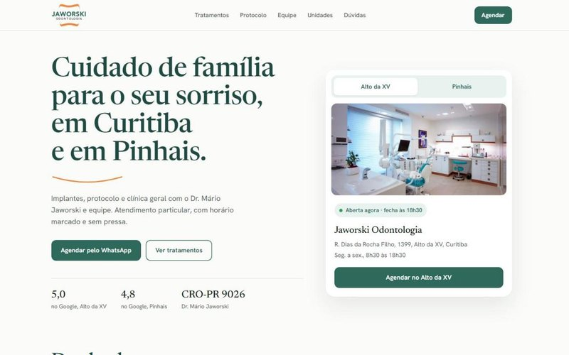
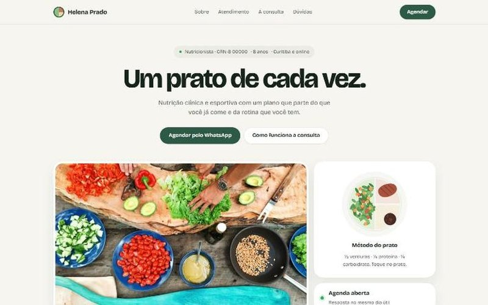
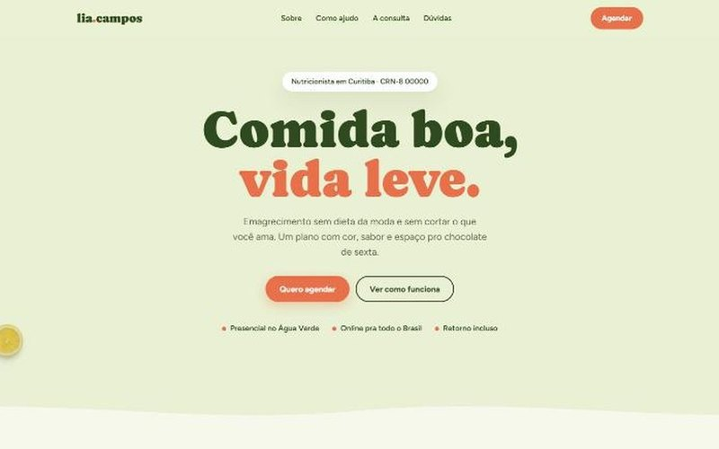
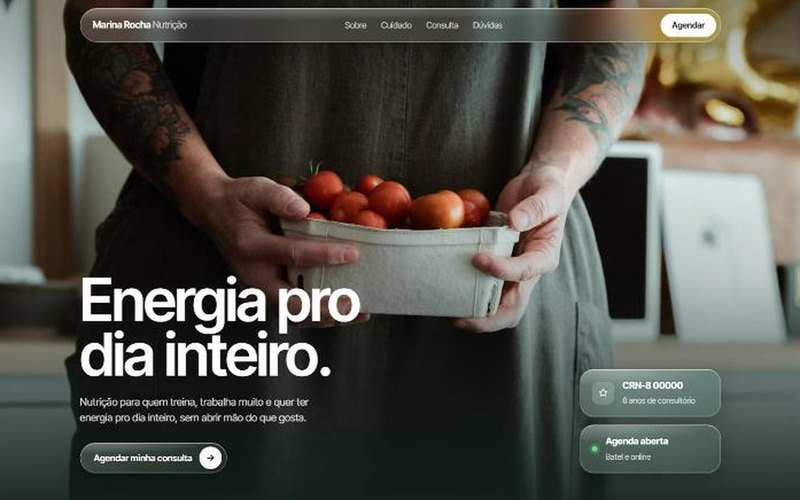
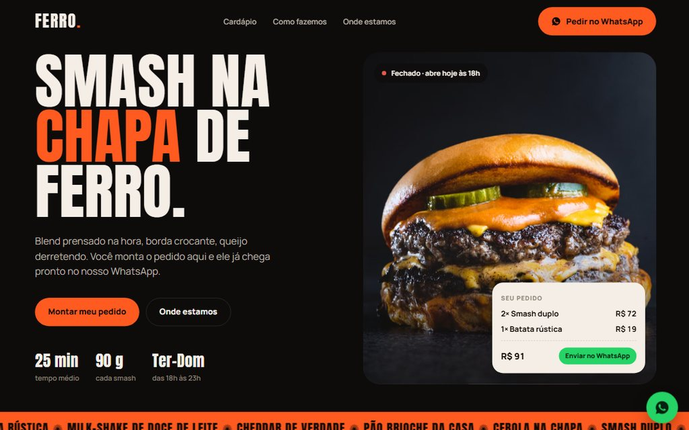
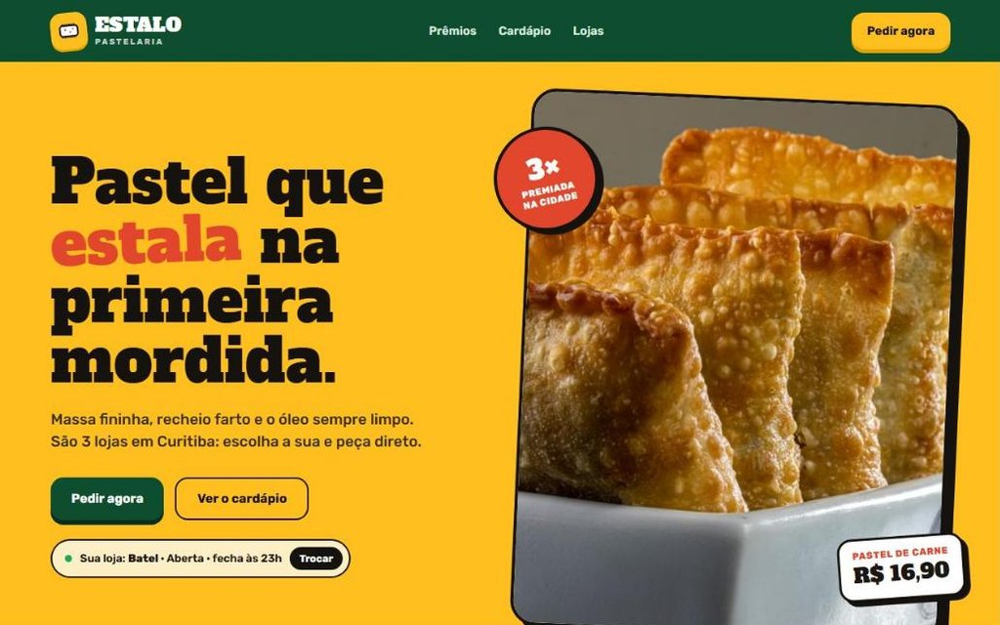
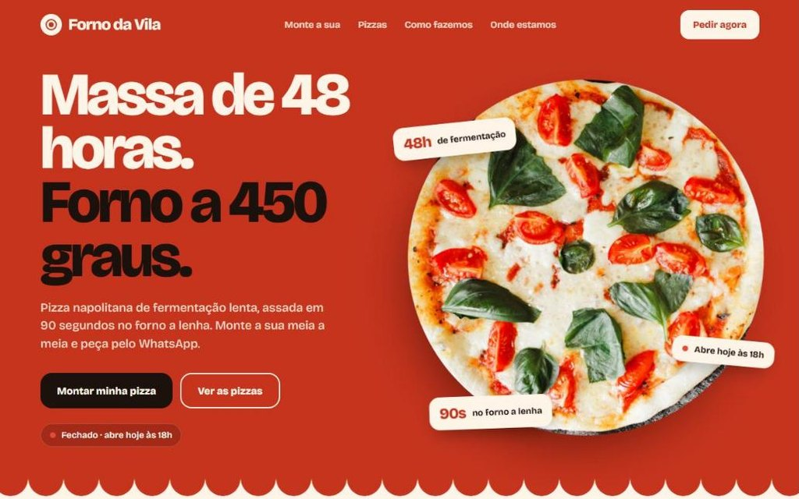
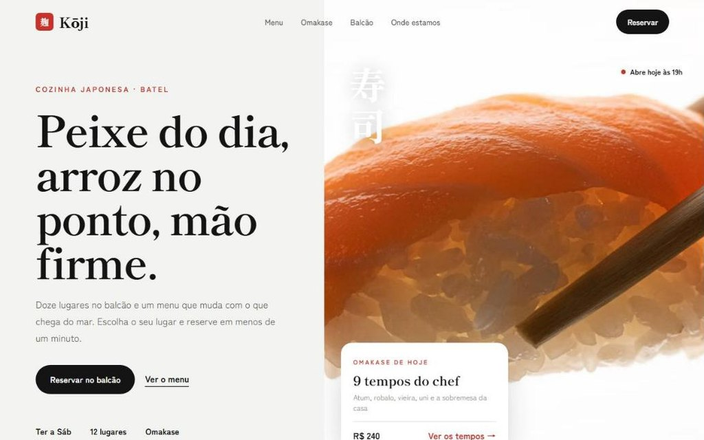

Faço sites para nutricionistas, psicólogos e outros profissionais que atendem pelo WhatsApp e querem passar mais confiança para quem chega.








Você me conta como trabalha, quem são seus clientes e o que mais quer que o site resolva.
Mostro 2 ou 3 caminhos de design para você escolher antes de construir.
Construo, testo no celular e no computador e publico no seu endereço.
Cuido do site depois de pronto: hospedagem, atualizações e pequenas mudanças.
Página única com tudo que o paciente precisa: quem é você, como funciona, contato direto no WhatsApp.
Site sempre no ar, atualizações de texto e fotos.
Agendamento que cai direto na sua agenda e lembrete automático para o paciente.
WhatsApp (41) 99231-9296